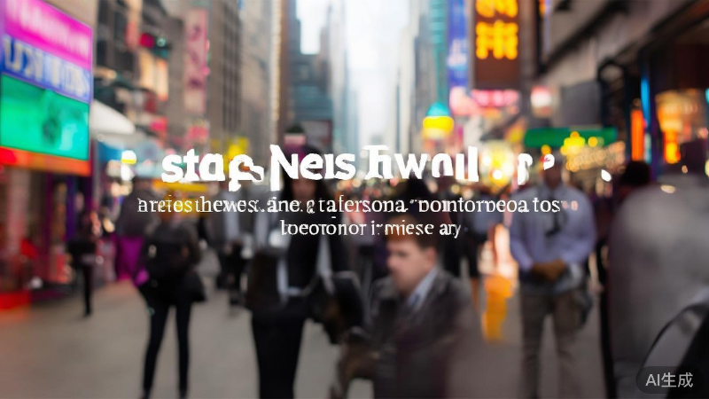

人工智能技术在医疗领域的突破性应用进展
科技日报
2024-01-15
12,580
近日，人工智能技术在医疗诊断领域取得了重要突破。研究人员开发出一种新型深度学习算法，能够在早期阶段准确识别多种癌症病变，准确率达到了95%以上，远超传统诊断方法。
技术突破带来新希望
这项由国内外多家科研机构联合研发的新技术，通过对数百万份医学影像数据的训练，建立了精准的病变识别模型。与传统方法相比，该技术不仅提高了诊断准确率，还将诊断时间从数小时缩短到几分钟，大大提高了医疗效率。
"人工智能正在改变医疗行业的面貌，它将成为医生最得力的助手，帮助我们挽救更多生命。" —— 项目负责人张教授
应用前景广阔
该技术目前已经在多家三甲医院进行临床试验，初步结果显示效果显著。专家预计，这项技术将在未来两年内逐步推广应用到全国各级医疗机构，届时将大幅提高癌症早期筛查的覆盖率和准确率。
核心优势：
- 早期诊断准确率超过95%
- 诊断速度提升10倍以上
- 可识别超过20种常见癌症
- 成本低于传统检测方法30%
除了癌症诊断，这项技术还可以应用于X光片、CT、MRI等多种医学影像的辅助诊断，未来发展空间巨大。研究团队表示，下一步将继续优化算法，扩大训练数据集，进一步提高诊断准确率。
专家观点
业内专家指出，人工智能与医疗健康的深度融合是未来发展的必然趋势。随着技术的不断进步，AI将在疾病预防、诊断、治疗、康复等各个环节发挥越来越重要的作用，为人类健康事业做出更大贡献。
同时，专家也强调，人工智能只是辅助工具，不能完全替代医生的专业判断。未来的医疗模式将是人机协作，充分发挥各自优势，为患者提供更好的医疗服务。
本文由科技日报原创，转载请注明出处